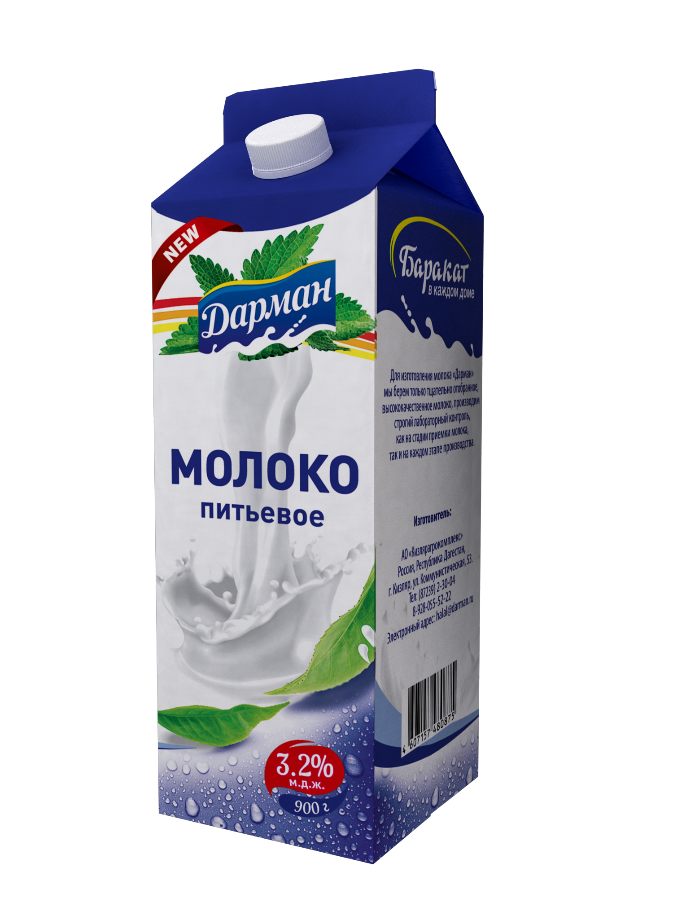
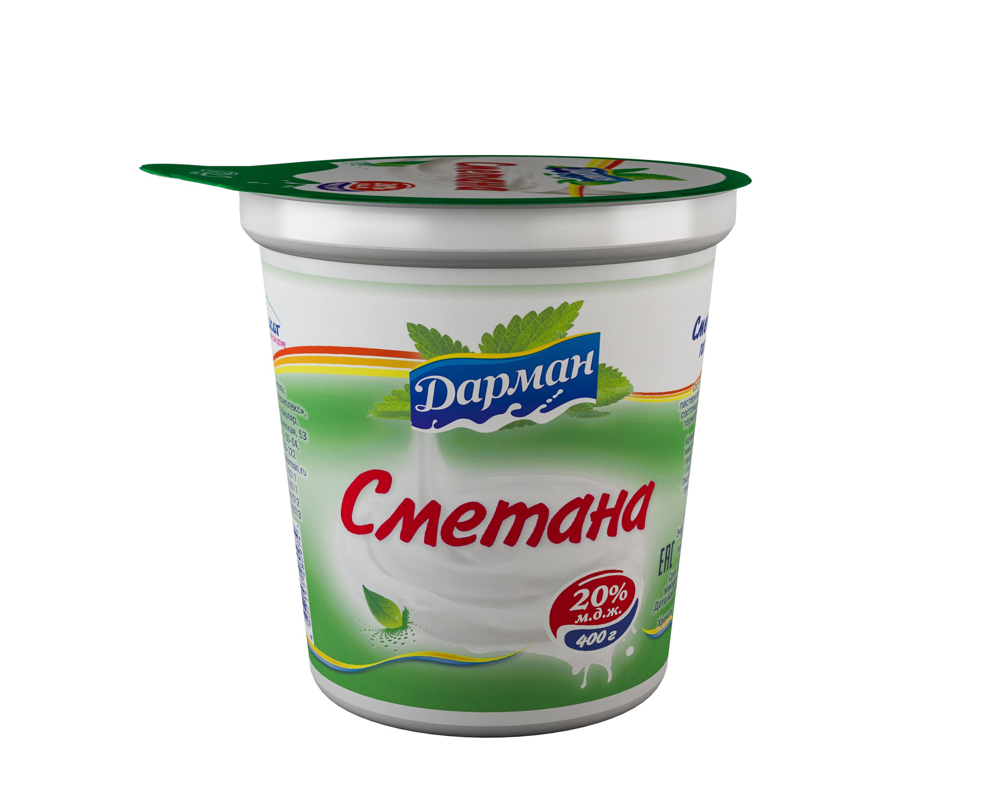
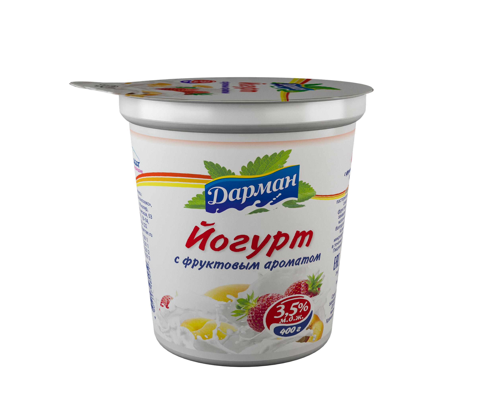
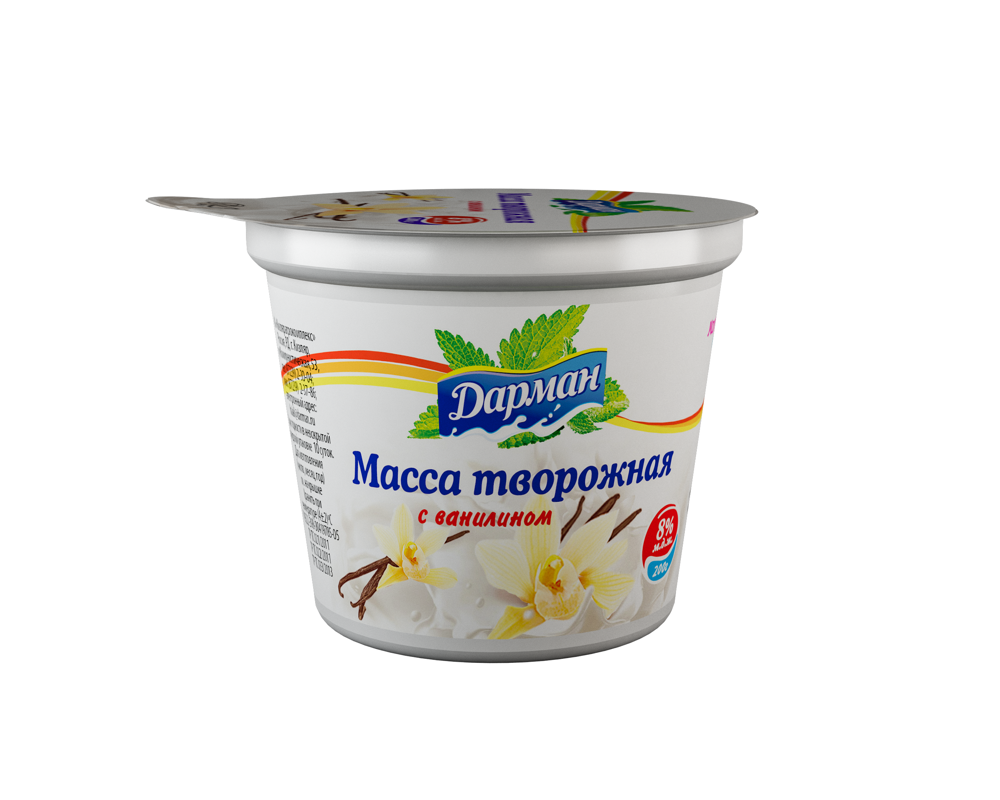
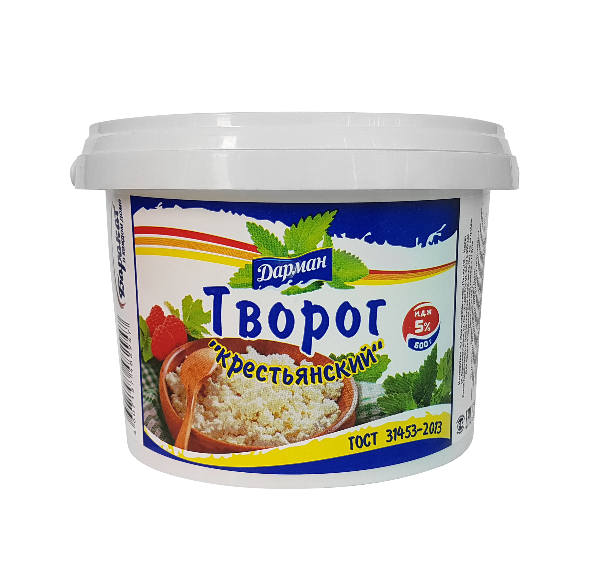

«Дарман» - это семья вкусных и натуральных молочных продуктов. Наши продукты произведены
исключительно из натурального сырья, с использованием современных технологий. Молочные продукты
«Дарман» - вкусно и здорово!
Продукция

Простокваша
Состав: цельное пастеризованное молоко, сливки, с использованием
заквасочных
микроорганизмов — лактококков и термофильных молочнокислых стрептококков. Пищевая ценность в 100 г: жиры,г — 4,0; белки,г — 3,0; углеводы,г — 4,0.
Энергетическая ценность: 64 ккал.
ГОСТ 31456-2013
Срок годности в невскрытой заводской упаковке 10 суток при температуре 4±2°С

Ряженка
Состав: цельное молоко, сливки, закваска. Пищевая ценность в 100 г: жиры,г — 4,0; белки,г — 3,0; углеводы,г — 4,0.
Энергетическая ценность: 64/268 ккал/кДж
Срок годности в невскрытой заводской упаковке — 10 суток при температуре 4±2°С
ГОСТ 31455-2012

Творог
Состав: пастеризованное, нормализованное молоко, закваска.
Пищевая ценность в 100 г: жиры,г — 9,0; белки,г — 16,7; углеводы, г — 2,0.
Энергетическая ценность: 155,8/652,3 ккал/кДж.
ГОСТ 31453-2013
Срок годности в невскрытой заводской упаковке 7 суток при температуре 4±2°С.

Творог
Состав: нормализованное пастеризованное молоко, закваска. Пищевая ценность в 100 г: жиры,г — 2,0; белки,г — 17,0; углеводы, г — 1,8.
Энергетическая ценность: 110 ккал.
ГОСТ 31453-2013
Срок годности в невскрытой заводской упаковке 7 суток при температуре 4±2°С.
Творог
Состав: молоко нормализованное пастеризованное, закваска для творога,
хлористый кальций, ферментный препарат микробного происхождения.
Пищевая ценность в 100 г: жиры, г – 9,0; белки, г – 15,7; углеводы,г – 2,9.
Энергетическая ценность: 155,4 ккал
ГОСТ 31453-2013
Срок годности в невскрытой заводской упаковке 7 суток при температуре 4±2°С.

Творог
Состав: молоко нормализованное пастеризованное, закваска для творога,
хлористый кальций, ферментный препарат микробного происхождения.
Пищевая ценность в 100 г: жиры, г – 9,0; белки, г – 15,7; углеводы,г – 2,9.
Энергетическая ценность: 155,4 ккал
ГОСТ 31453-2013
Срок годности в невскрытой заводской упаковке 7 суток при температуре 4±2°С.
Творог «Диетический»
Состав: пастеризованное обезжиренное молоко, закваска.
Пищевая ценность в 100 г: жиры, г – 1,0; белки, г – 15,7; углеводы,г – 2,9.
Энергетическая ценность: 155,4 ккал
ГОСТ 31453-2013
Срок годности в невскрытой заводской упаковке 7 суток при температуре 4±2°С.
Творог «Крестьянский»
Состав: молоко обезжиренное пастеризованное, сливки, закваска, хлористый
кальций, ферментный препарат микробного происхождения. Пищевая ценность в 100 г: жиры, г – 5,0; белки, г – 16,0; углеводы,г – 2,9.
Энергетическая ценность: 120,6 ккал
ГОСТ 31453-2013
Срок годности в невскрытой заводской упаковке 10 суток при температуре 4±2°С.
Сметана
Состав: нормализованные, пастеризованные сливки, закваска из смеси
лактококков и термофильных молочнокислых стрептококков.
Пищевая ценность в 100 г: жиры,г — 20,0; белки,г — 2,5; углеводы,г — 3,0.
Энергетическая ценность: 202/842 ккал/кДж.
ГОСТ 31452-2012
Срок годности в невскрытой заводской упаковке 10 суток при температуре 4±2°С.
Сметана «Элитная»
Состав: нормализованные пастеризованные сливки, закваска из смеси
лактококков и термофильных молочнокислых стрептококков.
Пищевая ценность в 100 г: жиры,г — 25,0; белки,г — 2,3; углеводы,г — 2,7.
Энергетическая ценность: 245/1026 ккал/кДж.
ГОСТ 31452-2012
Срок годности в невскрытой заводской упаковке 10 суток при температуре 4±2°С.
Сметана «Экономка»
Состав: нормализованные пастеризованные сливки, закваска из смеси
лактококков и термофильных молочнокислых стрептококков.
Пищевая ценность в 100 г: жиры,г — 15,0; белки,г — 2,6; углеводы,г — 3,2.
Энергетическая ценность: 158 ккал.
ГОСТ 31452-2012
Срок годности в невскрытой заводской упаковке 10 суток при температуре 4±2°С.
Молоко питьевое
Состав: молоко нормализованное.
Пищевая ценность в 100 г: жиры, г — 3,2; белки, г — 2,8; углеводы, г — 4,7.
Энергетическая ценность: 58,8 ккал
ГОСТ 31450-2013
Срок годности в невскрытой заводской упаковке 10 суток при температуре 4±2°С.
Молоко с финиковым сиропом
Состав: молоко нормализованное, сироп финиковый (100%натуральные финики).
Пищевая ценность в 100 г: жиры, г — 3,2; белки, г — 4,9; углеводы, г —
30,5.
Энергетическая ценность: 170,4 ккал.
СТО 49199119-2018
Срок годности в невскрытой заводской упаковке 10 суток при температуре 4±2°С.
Молоко питьевое
Состав: молоко пастеризованное.
Пищевая ценность в 100 г: жиры, г — 3,5-4,5; белки, г — 2,9; углеводы, г —
4,7.
Энергетическая ценность: 61,9 ккал
ГОСТ 31450-2013
Срок годности в невскрытой заводской упаковке 10 суток при температуре 4±2°С.
Молоко питьевое
Состав: молоко нормализованное пастеризованное.
Пищевая ценность в 100 г: жиры, г — 2,5; белки, г — 2,82; углеводы, г —
4,73.
Энергетическая ценность: 52 ккал
ГОСТ 31450-2013
Срок годности в невскрытой заводской упаковке 7 суток при температуре 4±2°С.
Молоко питьевое
Состав: молоко нормализованное пастеризованное.
Пищевая ценность в 100 г: жиры, г — 2,5; белки, г — 2,8; углеводы, г — 4,7.
Энергетическая ценность: 52 ккал
ГОСТ 31450-2013
Срок годности в невскрытой заводской упаковке 7 суток при температуре 4±2°С.
Молоко питьевое
Состав: молоко нормализованное пастеризованное.
Пищевая ценность в 100 г: жиры, г — 3,2; белки, г — 2,8; углеводы, г — 4,7.
Энергетическая ценность: 61 ккал
ГОСТ 31450-2013
Срок годности в невскрытой заводской упаковке 7 суток при температуре 4±2°С.
Молоко топленое
Состав: молоко нормализованное пастеризованное.
Пищевая ценность в 100 г: жиры, г — 4; белки, г — 2,8; углеводы, г — 4,7.
Энергетическая ценность: 272 ккал
ГОСТ 31450-2013
Срок годности в невскрытой заводской упаковке 15 суток при температуре 4±2°С .
Молоко цельное сгущенное
Состав: цельное молоко, сахар.
Пищевая ценность в 100 г: жиры, г — 8,5; белки, г — 7,2; углеводы, г — 56.
Энергетическая ценность: 328 ккал
ГОСТ 31688-2012
Срок годности в невскрытой заводской упаковке 60 суток при температуре 0±2°С
Сливки
Состав: сливки нормализованные.
Пищевая ценность в 100 г: жиры, г — 10,0; белки, г — 3,0; углеводы, г —
4,0.
Энергетическая ценность: 118/494 ккал/кДж
Срок годности в невскрытой заводской упаковке — 10 суток при температуре 4±2°С
ГОСТ 31451-2013
Кефир
Состав: нормализованное молоко, закваска на кефирных грибках.
Пищевая ценность в 100 г: жиры, г — 1; белки, г — 3,0; углеводы, г — 4,0.
Энергетическая ценность: 39 ккал.
ГОСТ 31454-2012
Срок годности в невскрытой заводской упаковке 10 суток при температуре 4±2°С.
Кефир
Состав: нормализованное молоко, закваска на кефирных грибках.
Пищевая ценность в 100 г: жиры, г — 2,5; белки, г — 2,9; углеводы, г — 3,9.
Энергетическая ценность: 53 ккал.
ГОСТ 31454-2012
Срок годности в невскрытой заводской упаковке 10 суток при температуре 4±2°С.
Кефир
Состав: нормализованное молоко, закваска на кефирных грибках.
Пищевая ценность в 100 г: жиры, г — 3,2; белки, г — 2,8; углеводы, г — 3,6.
Энергетическая ценность: 56 ккал.
ГОСТ 31454-2012
Срок годности в невскрытой заводской упаковке 10 суток при температуре 4±2°С.
Бифидок
Состав: нормализованное молоко, закваска на кефирных грибках и биомассы
бифидобактерий.
Пищевая ценность в 100 г: жиры, г — 2,5; белки, г — 2,9; углеводы, г — 3,9.
Энергетическая ценность: 53 ккал.
ГОСТ 31454-2012
Срок годности в невскрытой заводской упаковке 10 суток при температуре 4±2°С.
Сыворотка «Летняя»
Состав: сыворотка творожная.
Пищевая ценность в 100 г: белки, г — 0,9; углеводы, г — 3,8.
Энергетическая ценность: 19 ккал.
ТУ 9224-392-00419785-05
Срок годности в невскрытой заводской упаковке 10 суток при температуре 4±2°С.
Масса творожная
Состав: творог, сливки, сахар, фруктово-ягодный наполнитель.
Пищевая ценность в 100 г: жиры, г — 8,0; белки, г — 13,7; углеводы,г —
12,6.
Энергетическая ценность: 177/742 ккал/кДж
Срок годности в невскрытой заводской упаковке — 10 суток при температуре 4±2°С
ТУ 9222-398-00419785-05
Масса творожная
Состав: творог, финиковый сироп (100% натуральные финики). Без сахара.
Пищевая ценность в 100 г: жиры, г — 8,0; белки, г — 15,5; углеводы,г —
15,8.
Энергетическая ценность: 197/825 ккал/кДж
Срок годности в невскрытой заводской упаковке — 10 суток при температуре 4±2°С
ТУ 9222-398-00419785-05
Масса творожная
Состав: творог, сахар, изюм, ванилин.
Пищевая ценность в 100 г: жиры, г — 7,6; белки, г — 13,8; углеводы,г —
15,0.
Энергетическая ценность: 184 ккал
Срок годности в невскрытой заводской упаковке — 10 суток при температуре 4±2°С
ТУ 9222-398-00419785-05
Масса творожная
Состав: творог, сахар, ванилин.
Пищевая ценность в 100 г: жиры, г — 8,0; белки, г — 14,3; углеводы,г —
12,7.
Энергетическая ценность: 180 ккал
Срок годности в невскрытой заводской упаковке — 10 суток при температуре 4±2°С
ТУ 9222-398-00419785-05
Сырок творожный
Состав: творог, сахар, изюм, ванилин.
Пищевая ценность в 100 г: жиры, г — 8,0; белки, г — 13,7; углеводы,г —
12,6.
Энергетическая ценность: 177 ккал
Срок годности в невскрытой заводской упаковке — 7 суток при температуре 4±2°С
ТУ 9222-398-00419785-05
Йогурт питьевой
Состав: нормализованное пастеризованное молоко, фруктовый наполнитель
«Персик», молоко сухое, закваска.
Пищевая ценность в 100 г: жиры, г — 1,5; белки, г — 2,93; углеводы, г —
11,27.
Энергетическая ценность: 70 ккал
Срок годности в невскрытой заводской упаковке — 10 суток при температуре 4±2°С
ТУ 9222-217-00419785-00 в соответствии с ГОСТ 31981-2013
Йогурт с фруктовым ароматом
Состав: молоко, сахар, сухое обезжиренное молоко, закваска, стабилизатор
Е1450, ароматизатор идентичный натуральному, краситель Е122.
Пищевая ценность в 100 г: жиры, г — 3,5; белки, г — 3,28; углеводы, г —
11,3.
Энергетическая ценность: 90 ккал
Срок годности в невскрытой заводской упаковке — 10 суток при температуре 4±2°С
ГОСТ 31981-2013
Йогурт сливочный
Состав: сливки пастеризованные, фруктовый наполнитель, закваска из смеси
термофильных молочнокислых стрептококков и болгарской палочки.
Пищевая ценность в 100 г: жиры, г — 10,0; белки, г — 2,9; углеводы, г —
11,1.
Энергетическая ценность: 147 ккал
Срок годности в невскрытой заводской упаковке — 10 суток при температуре 4±2°С
ГОСТ 31981-2013
Сырок глазированный
Состав: творог, сахар-песок, глазурь кондитерская, масло сливочное,
наполнитель – вареное сгущенное молоко / вишневый наполнитель.
Пищевая ценность в 100 г: жиры, г — 25; белки, г — 8; углеводы, г – 35.
Энергетическая ценность: 393/1645 ккал/кДж
Срок годности в невскрытой заводской упаковке — 14 суток при температуре 0-6°С, 30 суток
при температуре – 18°С.
ГОСТ 33927-2016
Сыр плавленный «Деликатесный»
Состав: творог, масло сливочное, сухое молоко, натрий двууглекислый, соль
пищевая, соли-плавитель.
Пищевая ценность в 100 г: жиры, г — 45,0; белки, г — 13,3; углеводы, г —
2,2.
Энергетическая ценность: 216/904 ккал/кДж.
Срок годности в невскрытой заводской упаковке — 20 суток при температуре 4±2°С
ГОСТ 31690-2013
Сыр плавленый шоколадный
Состав: сыр, творог, сухое молоко, масло сливочное, сахар, какао-порошок,
соли-плавитель.
Пищевая ценность в 100 г: жиры, г — 18,3; белки, г — 14,2; углеводы, г —
20,0.
Энергетическая ценность: 317 ккал.
Срок годности в невскрытой заводской упаковке — 30 суток при температуре 4±2°С
Масло «Крестьянское»
Состав: сливки пастеризованные.
Пищевая ценность в 100 г: жиры, г – 72,5; белки, г – 0,8; углеводов, г –
1,3.
Энергетическая ценность: 661 ккал
Срок годности в невскрытой заводской упаковке – 120 суток при температуре – 18°С.
ГОСТ – 32261-2013
Масло шоколадное
Состав: сливки пастеризованные, сахар, какао-порошок, ароматизатор ванилин.
Пищевая ценность в 100 г: жиры, г – 62,2; белки, г – 1,2; углеводов, г –
19,6.
Энергетическая ценность: 644 ккал
Срок годности в невскрытой заводской упаковке – 60 суток при температуре – 18°С.
ГОСТ – 32899-2014